Next time: Episode 2, “Branded”
2:14 a.m. in Nerima. Takuto Kirishima feeds the stray cat that used to belong to his missing best friend, the same way he does every night. Then the railway bell starts ringing with no train coming, and the sky above Crossing No. 4 cracks open.
Twelve episodes. A boy from Tokyo, an axe nobody else could lift, and a man in a black suit who opened the sky on purpose.
The sky cracks over a Tokyo railway crossing. In the Barrow Fields, Takuto pulls out the Headsman's Axe, and something inside it wakes up.
The Hunters' Guild. Valentine's cube reads Takuto's rank as ERROR. Rin Ashveil hates him on sight.
The licensing exam, a Stonehide Behemoth, and Wick, another Skyfallen who says nobody ever goes home.
Gideon builds Takuto a harness so he can block exactly once. Someone is smiling in the forge smoke.
The Hydra of Marrowmere regrows every head he breaks off. Breaking a thing and killing it turn out to be different problems.
Fort Cinder falls under siege. Takuto loses control for the first time, and Rin gets hurt because of it.
The Plume Ogres aren't raiding the village. They're running from something worse.
Kurozane challenges Sieg to a duel, and Sieg's old squad comes back to haunt him.
The golden capital. Lucien Aurel offers Takuto a place in the Gilded Order, with Haruki standing at his side.
The Fiend that killed Sieg's squad returns with a horde, and Mr. Sable finally introduces himself.
Tyr the Frost Titan attacks the capital. Takuto lets Akuro out, and the Guild sends Vesper to kill him.
A golden barrier over an entire city, and the one Brand built to break it.
Everyone in this world needs a Brand to fight. Here is what each of them carries.
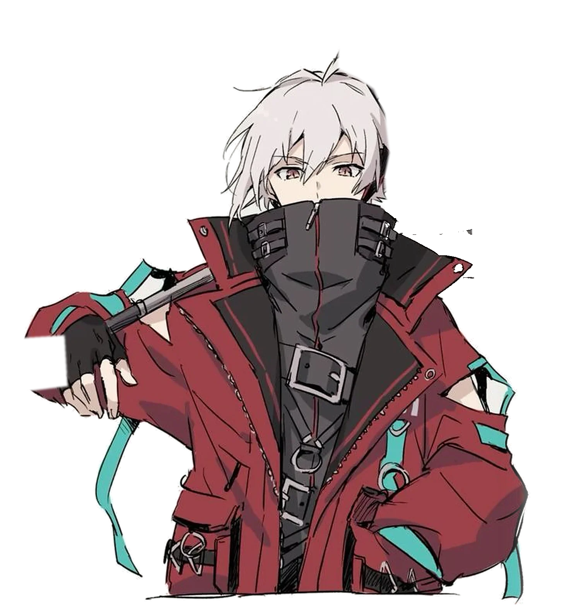
17, from Nerima. Whatever he strikes breaks. His axe can't block.
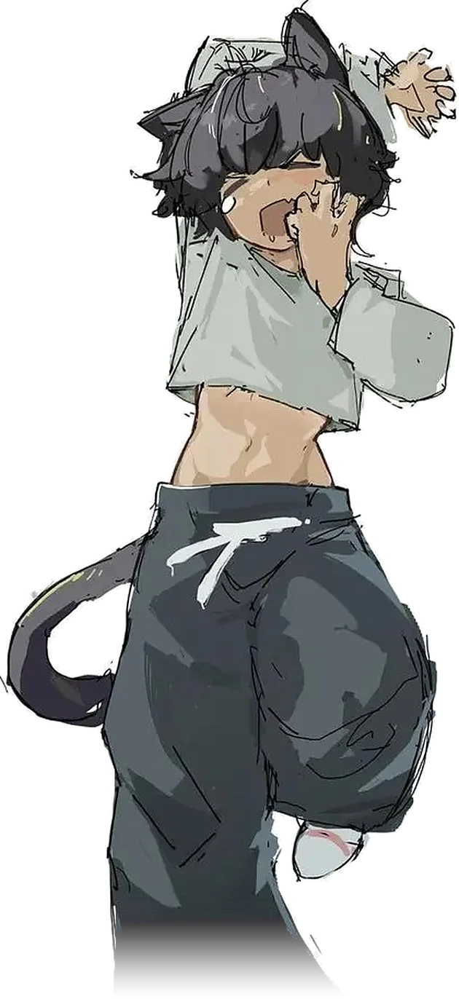
Grave scavenger who can die nine times. Seven used.
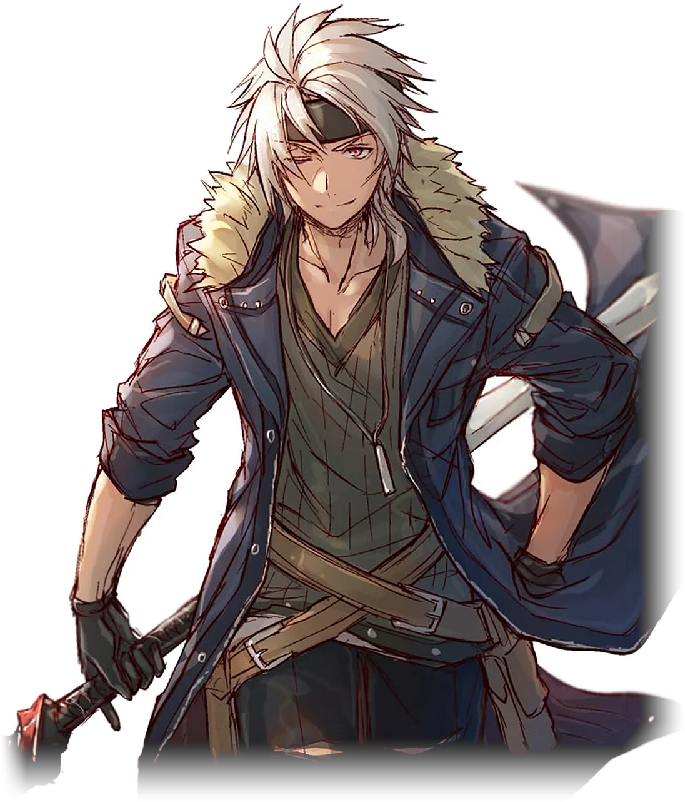
A-rank Hunter, "the Laughing Blade." Every slash repeats a heartbeat later.
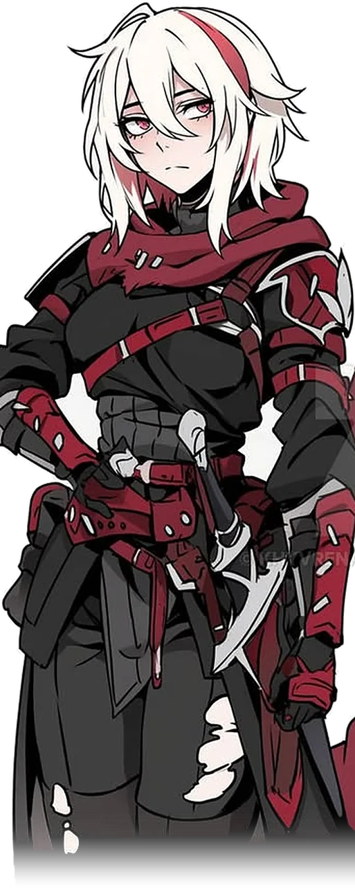
Rival prodigy. Her crimson threads bind, cut and tie things together.
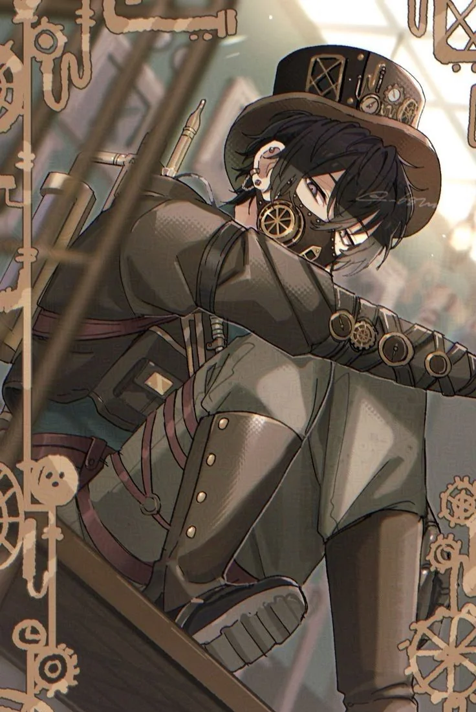
Guild artificer. Any metal he touches becomes a machine he controls.
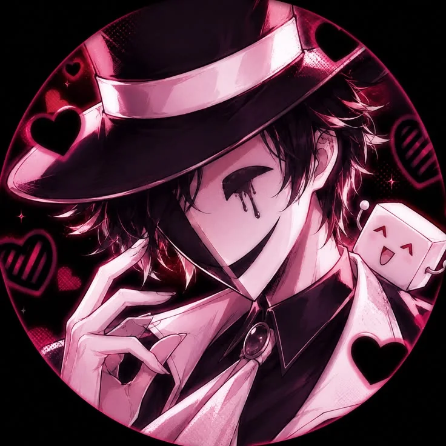
The Guild's Brand appraiser and his cube, who reads Brands.
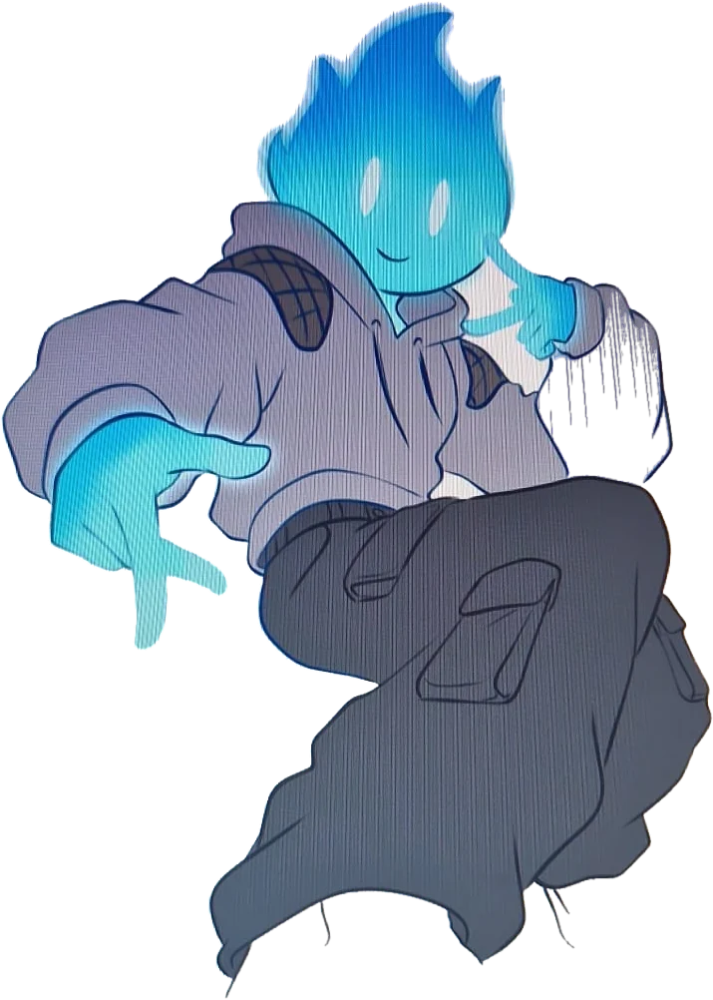
A Skyfallen from Osaka whose Brand turned his head into blue fire.
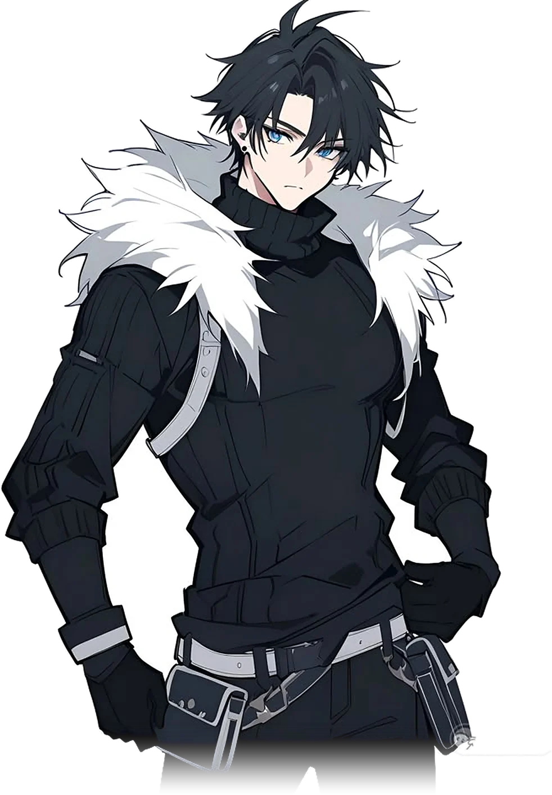
Takuto's best friend, missing for two years. Now he serves the Gilded Order.
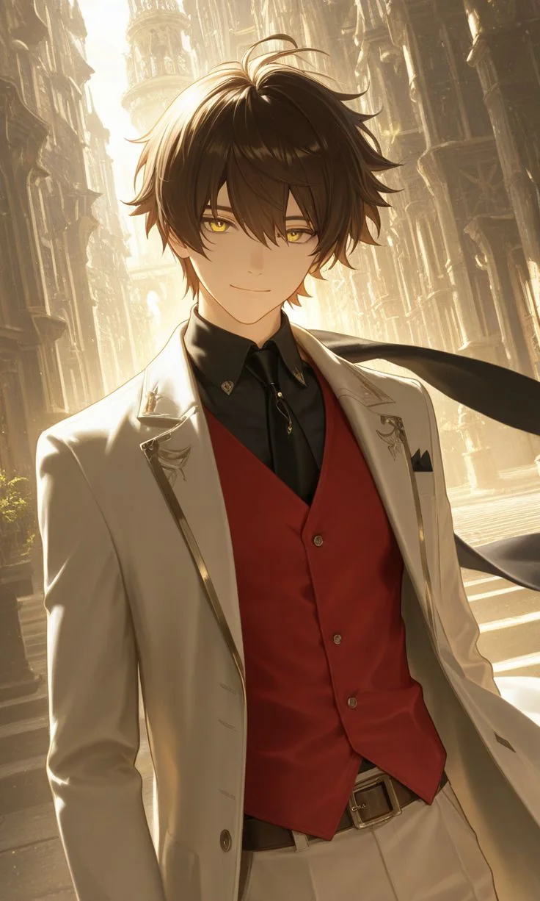
S-rank "Golden Saint." His barriers have never been broken.
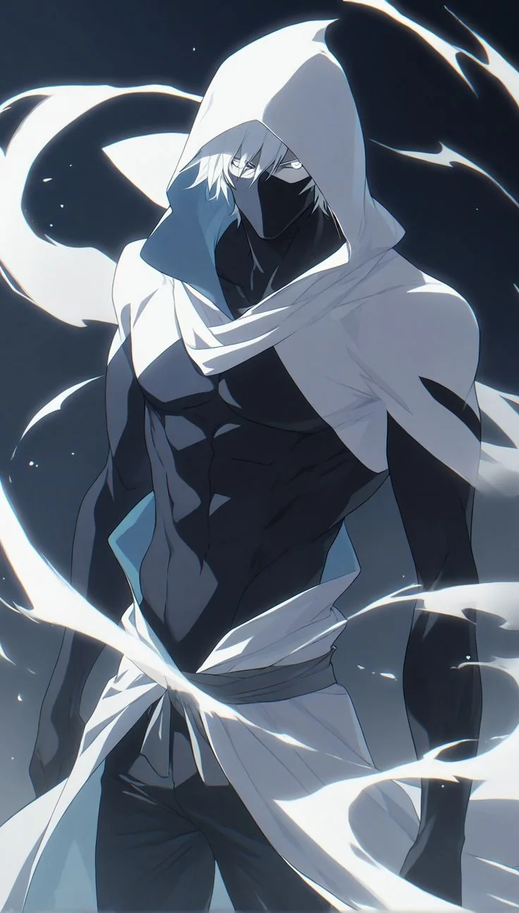
The Guild's executioner. Hunts Branded people who lose control.
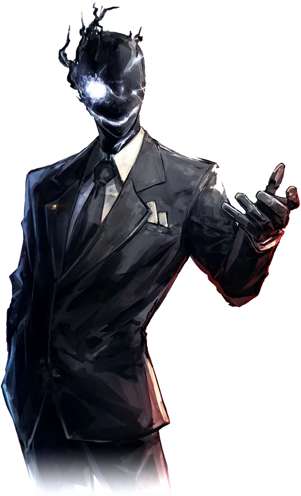
A Fiend in a black suit. He opened the sky above the crossing.
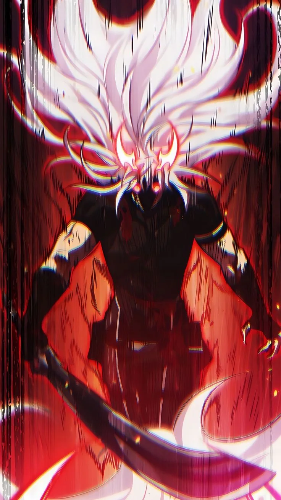
Sealed in the Headsman's Axe for 300 years. Talks to Takuto.
Fiends crawl out of Rifts in the sky. Ordinary weapons barely scratch them.